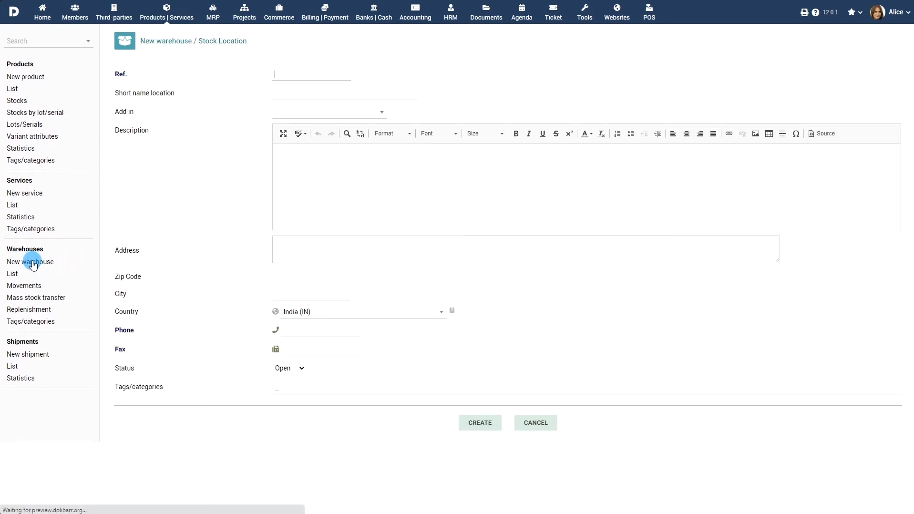
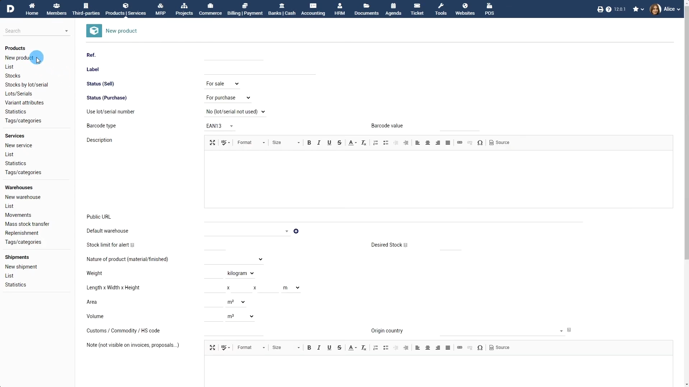
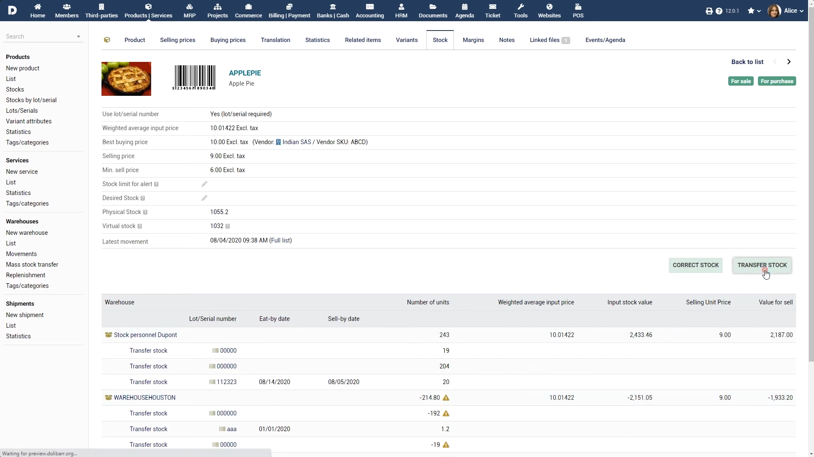
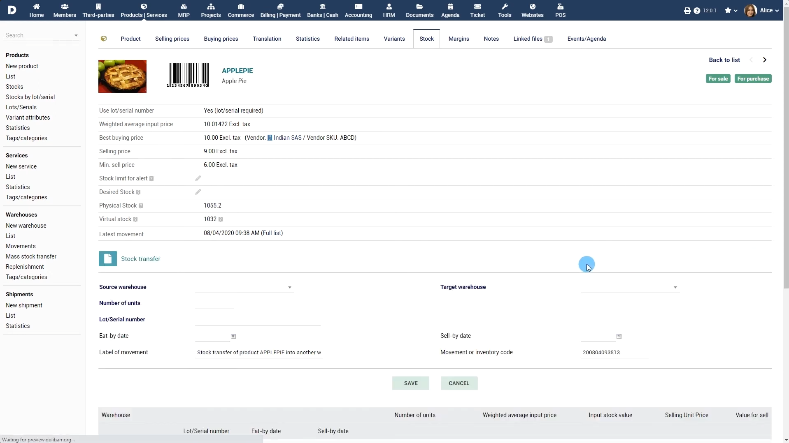

¿Qué hace el sistema?
El módulo de traslado entre bodegas dentro del ERP gestiona el flujo físico de productos de Embutidos de Calidad S.A. entre sus distintas sucursales y centros de almacenamiento. Específicamente, realiza las siguientes funciones:
- Registro de movimientos: Administra el ingreso, salida y transferencia física de mercancías entre bodegas.
- Asignación logística y de transporte: Vincula las órdenes de movimiento de inventario con las unidades de transporte y los pilotos asignados.
- Confirmación de recepción: Registra el ingreso de inventario en la bodega de destino y confirma la recepción final del pedido.
¿Qué tecnología utiliza?
Basado en la arquitectura de un ERP y en los requerimientos del caso, la solución integra:
- Módulo central de Inventarios y Logística: Software de gestión para el control multitabla de existencias y trazabilidad de lotes.
- Base de datos transaccional: Garantiza consultas de disponibilidad de inventario en tiempo real con tiempos de respuesta reducidos.
- Sistema de bitácora e historial inalterable: Registro automatizado de trazabilidad que guarda el usuario, fecha, hora y estación de trabajo de cada movimiento.
- Motor de reportes y exportación: Herramientas de generación de informes con capacidad de exportación a formatos PDF y Excel.
¿Cómo se maneja el proceso?


Configuración de Productos y Bodegas: Mediante los formularios de parámetros (New warehouse y New product), se registran las bodegas de origen/destino y la ficha del embutido. Se activa el control obligatorio por lotes indicando fechas de caducidad para garantizar la trazabilidad.
Solicitud y Muestreo de Calidad: La bodega emite la solicitud de traslado entre sucursales. Se realiza la auditoría y muestreo físico sobre el lote en origen para certificar el estado y la cadena de frío del embutido previa a su salida.


Registro del Traslado y Asignación de Transporte (Transfer Stock): En el módulo de inventarios, desde la pestaña Stock de la ficha del producto o el panel de Mass stock transfer, se ejecuta la acción TRANSFER STOCK. Se completan los campos obligatorios:
- Bodega de origen y Bodega de destino.
- Cantidad a trasladar.
- Lot/Serial number, Eat-by date y Sell-by date asignados.
- Movement or inventory code y Label of movement, vinculando en este campo la unidad de transporte y el piloto responsable del viaje.
¿Características de implementación?
La configuración técnica y operacional del módulo en el ERP facilita al usuario ciertos procesos.
- Interfaz de Transferencia Directa
- Control Estricto de Lotes y Perecederos
- Reportes y Métricas
Conclusión
La implementación del módulo de traslado entre bodegas en el ERP permite a Embutidos de Calidad S.A. digitalizar y estandarizar su cadena de suministro. Al integrar controles en el muestreo, asignación directa de transporte y trazabilidad inalterable en tiempo real, el sistema minimiza los descuadres de inventario, asegura la cadena de transporte y respalda los objetivos de la empresa.